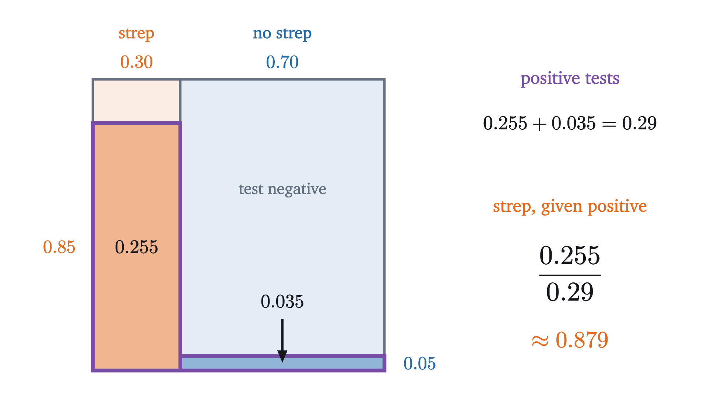
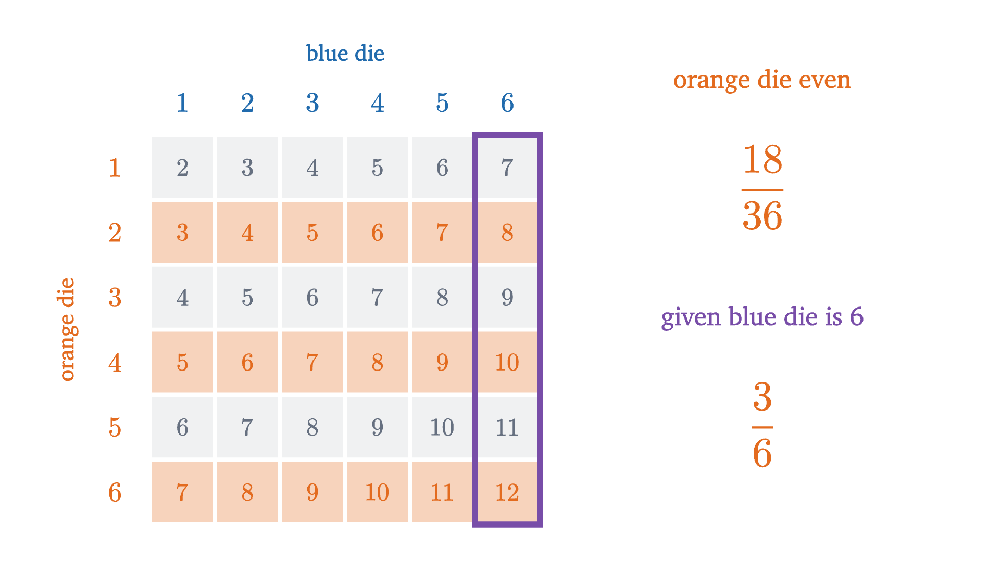
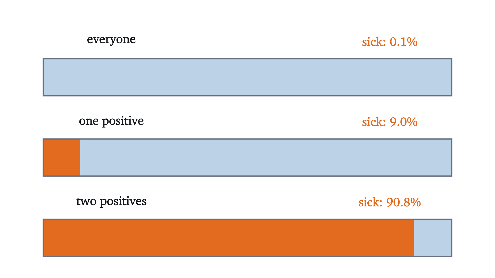

Bayes' rule: why a positive test is usually a false alarm
A 99% accurate test for a rare disease comes back positive, and the chance you are sick is about 9%. Conditional probability and Bayes' theorem explain why.
AssumesWhat probability means: counting equally likely outcomes
A disease affects one person in a thousand. There is a test for it that is 99% accurate: it gives the right answer for 99% of sick people and for 99% of healthy people. You take the test as part of a routine checkup, with no symptoms, and it comes back positive. What is the chance that you have the disease?
Pause and try
Write down your answer before reading further, as a percentage. Then try to justify it with a calculation.
Show answerHide answer
Most people answer 99% or something close to it, and in published studies many physicians have made the same mistake on similar screening problems. The correct answer is about 9%. The rest of this lesson explains where the missing 90 percentage points went.
The animation above shows where the 9% comes from. Take a thousand people. On average one of them is sick, and the test will almost certainly flag that person. But the test also errs on 1% of the 999 healthy people, which is about ten more positives. So there are about eleven positive results, and only one of them belongs to a sick person. You are one of the eleven, and you do not know which.
The 99% and the 9% are both correct. They answer different questions, and to tell the questions apart we need a way to say “the probability of this, given that”: conditional probability. Dice make it visible, so we start there.
New information shrinks the sample space
Recall the setup from the lesson on sample spaces. Rolling a blue die and an orange die has 36 equally likely outcomes, the pairs $(a, b)$ with $a$ the blue face and $b$ the orange face. An event is a set of outcomes, and when outcomes are equally likely its probability is the number of outcomes in it divided by 36. For example “doubles” (both dice the same) is 6 cells of the grid, so its probability is $6/36 = 1/6$.
Now suppose the dice are rolled where you cannot see them, and a friend who can see them tells you one thing: the total is at least 10.
Pause and try
Given that the total is at least 10, what is the probability that the roll is a double? List the outcomes that are still possible.
Show answerHide answer
A total of at least 10 leaves six outcomes: $(4,6), (5,5), (6,4), (5,6), (6,5), (6,6)$. Two of them, $(5,5)$ and $(6,6)$, are doubles. So the probability is $2/6 = 1/3$, twice what it was before your friend spoke.
Look at what the calculation did. The information “total at least 10” is an event, call it $B$, with 6 cells. Once we know $B$ occurred, the outcomes outside $B$ are impossible, and the outcomes inside $B$ are still equally likely among themselves, since nothing we learned favors one of them over another. So $B$ becomes the new sample space. The event $A$ = “doubles” survives only as the part of it inside $B$, which is $A \cap B$, and
Divide the top and bottom by 36 and the same number reads $\frac{2/36}{6/36} = \frac{P(A \cap B)}{P(B)}$. In that form it no longer mentions counting, so it makes sense for any probability measure, and it is taken as the definition.
The hypothesis $P(B) > 0$ is there because we divide by $P(B)$; we cannot condition on something that has no chance of happening. The numerator is the part of $A$ compatible with what we learned. The denominator rescales so that the new sample space $B$ has total probability 1: indeed $P(B \mid B) = 1$.
Multiplying through by $P(B)$ gives a form that is often more useful, the multiplication rule:
In words: for both to happen, $B$ must happen, and then $A$ must happen given that $B$ did.
The order matters
Conditional probability has a trap built into its notation, and the opening question walks straight into it. Compute the dice example the other way round: given that the roll is a double, what is the probability that the total is at least 10? Now the new sample space is the 6 doubles, and 2 of them have a total of at least 10, so $P(B \mid A) = 2/6$ as well. The two agree here only because $A$ and $B$ happen to have the same size. Change the event to see them come apart. Let $C$ be “the total is 12”, the single cell $(6,6)$. Then
Given a double, a 12 is unlikely. Given a 12, a double is certain. Both fractions have the same numerator, $P(A \cap C) = 1/36$, and different denominators, because they are fractions of different sets.
Return to the test with this in mind. Write $S$ for “the person is sick” and $+$ for “the test is positive”. The accuracy figure quoted for the test is $P(+ \mid S) = 0.99$: of the sick, the fraction who test positive. The question you care about after a positive result is $P(S \mid +)$: of those who test positive, the fraction who are sick. These are fractions of different groups of people, and the hero animation showed how different the groups are. Almost all sick people are in the positive group, and yet the positive group is mostly healthy people, because there were so many healthy people to begin with.
Counting the positives exactly
The thousand-person picture rounded a little: 1% of 999 is 9.99 people. To get exact whole numbers, imagine 100,000 people instead and follow them through the test. We need three numbers about the test and the population, and it is worth giving each its standard name. The prevalence is $P(S) = 0.001$. The sensitivity is $P(+ \mid S) = 0.99$. The false positive rate is $P(+ \mid S^c) = 0.01$, where $S^c$ is the complement of $S$, “the person is healthy”.
Of 100,000 people, 1098 test positive, and 99 of those are sick. So
A positive result has moved your chance of being sick from 1 in 1000 to about 1 in 11. That is a ninety-fold increase, and the test deserves credit for it. It is still far from 99%, and the reason is in the tree: the healthy branch is 999 times as wide as the sick branch, so even a 1% error rate on it produces about ten times as many positives as the whole sick branch can.
The same computation as areas
The tree used 100,000 people for convenience, and nothing depended on that number. To see the structure without a population, draw the sample space as a square of area 1 and let area stand for probability. I would like to draw the disease this way, but a strip for the sick one-thousandth as wide as the square would be invisible, which is itself a fair picture of the problem. So here is a test with friendlier proportions. Among children brought to a clinic with a sore throat, suppose 30% have strep. A rapid strep test is positive for 85% of those who have it and for 5% of those who do not.

Read the picture as two steps. First, the area of each outlined rectangle is a width times a height, which is the multiplication rule: $P(+ \cap \text{strep}) = P(+ \mid \text{strep})\,P(\text{strep}) = 0.85 \times 0.30 = 0.255$, and likewise $0.05 \times 0.70 = 0.035$ for the children without strep. Second, the event “positive” is the two outlined rectangles together, which do not overlap, so its probability is the sum $0.255 + 0.035 = 0.29$. The conditional probability we want is one rectangle’s share of that total:
Here a positive test means the child probably has strep. The test is less accurate than the one in the opening question, on both counts, and its positive results are far more trustworthy. The difference is the 30% against the 0.1%.
The two theorems
Both computations followed the same pattern, and each step of it is a theorem. The first is the step where we split “positive” into pieces according to an unknown we would like to condition on.
Call events $B_1, \dots, B_n$ a partition of $\Omega$ if no two of them share an outcome and together they contain every outcome, so that exactly one of them occurs. “Sick” and “healthy” form a partition with $n = 2$.
Match the clauses to the pictures. The numerator is one outlined rectangle: the 99 sick positives, or the area 0.255. The denominator is all the outlined rectangles: the 1098 positives, or the area 0.29. The hypotheses are exactly what the pictures need: the $B_i$ must tile the square without overlap, and no conditioning event may have probability zero.
The theorem is named for Thomas Bayes, whose essay containing a special case was read to the Royal Society in 1763 and printed in 1764, after his death. In the vocabulary that has grown up around it, $P(B_j)$ is the prior probability, held before seeing the evidence $A$, and $P(B_j \mid A)$ is the posterior probability, held after.
For the opening question the formula reads
which is the tree’s $99/1098$ with both numbers divided by 100,000.
How the answer depends on the base rate
Pause and try
Keep the same test, 99% sensitivity and 1% false positive rate, but suppose the disease affects 1 person in 100. What is $P(S \mid +)$ now? Guess first, then compute.
Show answerHide answer
$P(S \mid +) = \dfrac{0.99 \times 0.01}{0.99 \times 0.01 + 0.01 \times 0.99} = \dfrac{0.0099}{0.0198} = \dfrac12$. With 10,000 people: 100 are sick and 99 test positive; 9,900 are healthy and 99 test positive. The two groups of positives are the same size.
The figure plots the posterior against the prior for this test.
The curve rises almost vertically at the left edge, which is where rare conditions live. In that region the posterior is acutely sensitive to the prior, and a posterior quoted without its prior is close to meaningless. This is why the same positive result means one thing for a patient with symptoms or a family history, whose prior is already substantial, and another in a screening program that tests everyone.
A computation like this is a prediction about frequencies, and it can be checked the way the lesson on sample spaces checked the dice. The figure simulates the opening scenario person by person.
In this run 1088 of the 100,000 simulated people tested positive and 97 of those were sick, a share of 8.9%, against the computed 9.0%.
Independence
Sometimes learning that $B$ occurred changes nothing about $A$. Take the dice again, with $B$ = “the blue die shows 6” and $A$ = “the orange die shows an even number”. Among all 36 outcomes, $A$ has 18, so $P(A) = 1/2$. Among the 6 outcomes in $B$, three have an even orange face, so $P(A \mid B) = 3/6 = 1/2$ as well.

When $P(A \mid B) = P(A)$, the multiplication rule becomes $P(A \cap B) = P(A)\,P(B)$. That product form is symmetric in $A$ and $B$ and needs no assumption that anything is positive, so it is used as the definition.
The equivalence is one line: divide both sides of the product equation by $P(B)$, or multiply $P(A \mid B) = P(A)$ through by it. In the dice example, “doubles” and “total at least 10” were not independent: $P(A \mid B) = 1/3$ while $P(A) = 1/6$. Whether two events are independent is settled by this computation. Often we go the other way, and assume independence on physical grounds (two dice do not influence each other) in order to compute $P(A \cap B)$ by multiplying. That assumption is what justified treating the 36 cells as equally likely in the first place: $\frac16 \times \frac16 = \frac{1}{36}$.
Worked examples

Common mistakes
One more caution concerns the hypotheses of the law of total probability. If the $B_i$ overlap or fail to cover $\Omega$, the formula gives wrong answers. With two dice let $A$ be “total is 12”, $B_1$ “blue die is 6” and $B_2$ “orange die is 6”. Then $P(A \mid B_1)P(B_1) + P(A \mid B_2)P(B_2) = \frac16 \cdot \frac16 + \frac16 \cdot \frac16 = \frac{2}{36}$, while $P(A) = \frac{1}{36}$. The cell $(6,6)$ lies in both $B_1$ and $B_2$ and has been counted twice.
Stepping back
The arithmetic in the opening question is a single fraction. The difficulty is seeing that “99% accurate” describes the test’s behavior within the sick group and within the healthy group, while the question asks about the composition of the positive group, and that the two are connected only through how large the sick and healthy groups were to begin with. Bayes’ theorem is the bookkeeping for that connection.
The habit worth keeping is the one in the tree: when a conditional probability feels confusing, replace it with counts in an imagined population, split by the thing you do not know, and then collect everyone who matches what you observed. The next lesson uses the multiplication rule along a chain of events to explain another result that most people guess badly: how few people it takes before two of them share a birthday.
Check yourself
A condition affects 1% of a population. A test detects 90% of cases and gives a false positive for 10% of people without the condition. A person tests positive. Which is closest to the probability that they have the condition?
Problems
For each test problem, draw the tree for a convenient population before using the formula.
Problem 1
Two fair dice, one blue and one orange, are rolled. Find $P(\text{total} \ge 9 \mid \text{blue die shows } 5)$ and $P(\text{blue die shows } 5 \mid \text{total} \ge 9)$.
Show solutionHide solution
Let $A$ be “total at least 9” and $B$ be “blue die shows 5”. $B$ has 6 cells, $(5,1), \dots, (5,6)$, and the ones with total at least 9 are $(5,4), (5,5), (5,6)$, so $|A \cap B| = 3$ and $P(A \mid B) = 3/6 = 1/2$. For the reverse, $A$ consists of the totals 9, 10, 11, 12 with $4 + 3 + 2 + 1 = 10$ cells, so $P(B \mid A) = 3/10$. Same numerator, different denominators.
Problem 2
A condition has prevalence 2%. A test has sensitivity 95% and a false positive rate of 10%. Find the probability that a person who tests positive has the condition.
Show solutionHide solution
Per 10,000 people: 200 have the condition, of whom $0.95 \times 200 = 190$ test positive; 9,800 do not, of whom $0.10 \times 9800 = 980$ test positive. So
By the formula: $\dfrac{0.95 \times 0.02}{0.95 \times 0.02 + 0.10 \times 0.98} = \dfrac{0.019}{0.117}$, the same number.
Problem 3
Urn 1 contains 3 red balls and 1 blue ball. Urn 2 contains 1 red ball and 3 blue balls. A fair coin is flipped to choose an urn, and one ball is drawn at random from it. Find the probability that the ball is red. Given that it is red, find the probability that it came from urn 1.
Show solutionHide solution
The urns partition the possibilities, each with probability $1/2$. By the law of total probability,
By Bayes’ theorem, $P(\text{urn 1} \mid \text{red}) = \dfrac{3/8}{1/2} = \dfrac34$. Check with counts: run the experiment 8 times; on average urn 1 is chosen 4 times and gives 3 reds, urn 2 is chosen 4 times and gives 1 red. Of the 4 reds, 3 came from urn 1.
Problem 4
In the opening scenario (prevalence 0.001, sensitivity 0.99, false positive rate 0.01), suppose your test is negative. What is the probability that you are sick anyway?
Show solutionHide solution
Use the tree with 100,000 people. The negatives are the 1 sick person the test missed and the $99{,}900 - 999 = 98{,}901$ healthy people correctly cleared. So
A negative result lowers the chance of disease from 1 in 1000 to about 1 in 100,000. For a rare disease a negative from this test is far more conclusive than a positive.
Problem 5
Two fair dice are rolled. Let $B$ be “the blue die shows 3”. (a) Is $B$ independent of the event “the total is 7”? (b) Is $B$ independent of “the total is 8”? Explain the difference.
Show solutionHide solution
$P(B) = 6/36 = 1/6$. (a) “Total 7” has 6 cells, probability $1/6$. The intersection is the single cell $(3,4)$, probability $1/36$, and $\frac16 \times \frac16 = \frac{1}{36}$. Independent. (b) “Total 8” has 5 cells, probability $5/36$. The intersection is the cell $(3,5)$, probability $1/36$, but $\frac16 \times \frac{5}{36} = \frac{5}{216} \neq \frac{1}{36}$. Not independent. The difference: whatever the blue die shows, exactly one orange face completes a total of 7, so knowing the blue face does not change the chance of a 7. For a total of 8, a blue 1 makes it impossible and any other blue face leaves one way, so the blue face does carry information.
Problem 6
A family has two children. Assume each child is equally likely to be a boy or a girl, independently. (a) Given that the older child is a girl, what is the probability that both are girls? (b) Given that at least one child is a girl, what is the probability that both are girls?
Show solutionHide solution
The sample space, listing the older child first, is $\{GG, GB, BG, BB\}$ with each outcome of probability $1/4$. (a) “Older is a girl” is $\{GG, GB\}$, and $GG$ is one of its two outcomes: $1/2$. (b) “At least one girl” is $\{GG, GB, BG\}$, and $GG$ is one of its three outcomes: $1/3$. The two conditions sound alike and are different events, of sizes 2 and 3. This is the same structure as the “at least one six” example.
Problem 7
Let $P$ be a probability measure on a finite sample space $\Omega$ and let $B$ be an event with $P(B) > 0$. Define $Q(A) = P(A \mid B)$ for every event $A$. Prove that $Q$ is a probability measure, that is, that it satisfies the three axioms: $Q(A) \ge 0$; $Q(\Omega) = 1$; and $Q(A_1 \cup A_2) = Q(A_1) + Q(A_2)$ whenever $A_1$ and $A_2$ are disjoint.
Show solutionHide solution
Nonnegativity. $Q(A) = P(A \cap B)/P(B)$ is a nonnegative number divided by a positive one. Normalization. $\Omega \cap B = B$, so $Q(\Omega) = P(B)/P(B) = 1$. Additivity. Let $A_1$ and $A_2$ be disjoint. Then $(A_1 \cup A_2) \cap B = (A_1 \cap B) \cup (A_2 \cap B)$, and the two sets on the right are disjoint because they are subsets of $A_1$ and $A_2$. By additivity of $P$,
So conditioning on $B$ produces a new probability measure, and every rule proved from the axioms (the complement rule, the addition rule) holds for conditional probabilities too. For instance $P(A^c \mid B) = 1 - P(A \mid B)$.
Problem 8
For the disease with prevalence 1 in 1000, suppose a test has the same number $a$ for its sensitivity and for its probability of a correct negative on a healthy person (so its false positive rate is $1 - a$). How large must $a$ be for a positive result to mean the person is more likely sick than not?
Show solutionHide solution
By Bayes’ theorem,
This exceeds $\frac12$ exactly when the numerator exceeds the other term of the denominator: $0.001\,a > 0.999\,(1 - a)$, that is, $a > 0.999$. The test must be wrong less than once in a thousand, which is to say its error rate must be smaller than the prevalence. At $a = 0.999$ exactly, per million people there are 999 true positives and 999 false positives, and the posterior is $\frac12$. This is a useful rule of thumb: a positive result is more likely true than false only when the disease is more common than the test’s false alarms.